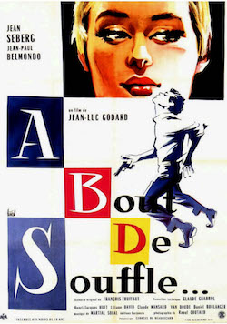
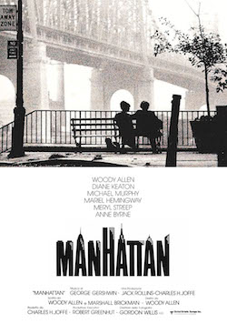
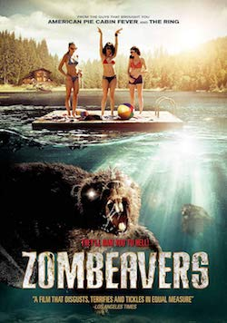

After a master degree in digital marketing and product management I decided to improve my skillset with Le Wagon awesome bootcamp
|  |
A bout de souffleL'itinéraire d'un jeune délinquant qui, après avoir volé une voiture et tué un policier, est traqué par la police... |
|  |
ManhattanIsaac Davis est un auteur de sketches comiques new-yorkais de 42 ans que son épouse Jil vient de quitter. Il entretient avec une collégienne de 17 ans, Tracy, une liaison dont il lui rappelle le caractère éphémère. Il l'abandonne bientôt pour se mettre en ménage avec Mary Wilke, la maîtresse de Yale Pollack, son meilleur ami.. |
|  |
ZombeaversUn groupe d’adolescents, partis pour un week-end de débauche au bord d’une rivière, se retrouve confronté à une horde de castors-zombies affamés. Pour réussir à rester en vie, les jeunes vont devoir affronter ces animaux d’une nouvelle espèce... |